While not the most glamorous part of a product manager’s job, tracking metrics reveal blindspots, foster stakeholder confidence and offer vital product (and organizational) health checks for PMs. However, with a seemingly endless selection of metrics, the measurement process can appear intimidating and *whoosh* just go over your head.
At a SaaS company, metrics can be even more muddled for PMs. Since SaaS business models aren’t super traditional and revenue/growth is measured in recurring units, there’s a ‘special’ subset of metrics for PMs to manage. But SaaS PMs don’t only have to worry about which metrics to measure, they have to ask themselves: when will these metrics be valuable? Remember the Technology Adoption Lifecycle Model? (We’ve talked about it here and here before.) Where your product falls on this model impacts which metrics you should monitor.
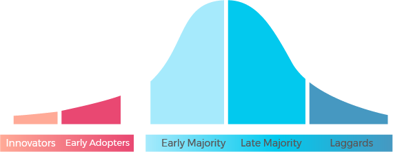
Being a SaaS company ourselves, we want to help. We narrowed down the list of metrics most relevant to SaaS PMs, but also explore why they’re useful, how to calculate them and when they matter most for your product.
Here are the metrics we break down:
- Customer Lifetime Value
- Customer Acquisition Cost
- Annual Contract Value
- Monthly Recurring Revenue (or Annual Recurring Revenue)
- Churn
- Quick Ratio
- Retention
- Conversion Rate
- Lead Velocity Rate
Customer Lifetime Value
Known by many terms, customer lifetime value (LTV, CLTV, CLV, total customer value) is a benchmark for determining future spending and real customer worth. LTV is literally how much revenue a customer will bring during their time as a paying customer. This metric is helpful to SaaS PMs when deciding how much to spend on obtaining new customers, how much to dish out to keep existing customers or where to allocate resources.
Calculations
Calculating this metric can be a big feat thanks to so many variables coming into play. Let’s break down the simplest method of calculating this metric:
- How much does your average customer pay? Use customers’ average expenditure as the starting point for your LTV.
- Next, calculate how often your average customer pays. i.e. What is the average number of purchases you get in the same timeframe as step 1?
- Finally, average lifetime of your customer. How long does the average customer stay as a paying customer? (Note: unit of time should be consistent with steps 1 & 2)
Once you’ve got those three factors, plug and chug into the formula below to get LTV.
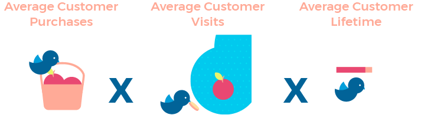
While this formula streamlines the process, there’s a problem. The formula gives all revenue without considering any costs. Let’s be real; there are costs involved with getting/keeping customers. If you want a more accurate LTV, consider average profit margin per customer and include it in the formula like so:
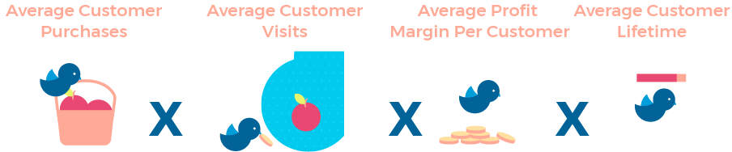
Accounting for average profit margin addresses money spent to keep customers around during their ‘lifetime.’ While this tightens the formula, it’s still an average. It covers ALL your customers no matter who they are. To make this metric even more valuable, consider customer segments.
At a SaaS organization, you’ll probably have different tiers of customers/subscriptions, so an aggregate LTV probably isn’t useful. Real value pops up when you calculate LTV of your enterprise customers vs. business subscribers vs. professional users or long-time customers vs. newer customers (or any other categorization you see fit).
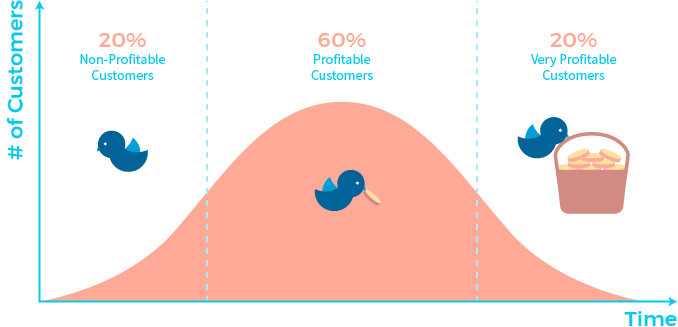
There’s no specific formula to split LTV by user segment. All you do is apply the regular LTV formula to the segmented customers you want to study. From there, identify which segments are most profitable, so you can analyze the amount you’re willing to spend to capture different types of customers.
When is this metric useful for SaaS PMs?
Frankly, LTV only becomes relevant to SaaS PMs the longer a product is in market. Looking at the Technology Adoption Lifecycle Model, your LTV is a major KPI once in the Early Adopters phase—just before the chasm.
SaaS PMs with products in the Innovators phase should be less concerned with LTV because your metrics should still be quite high-level. Your product is still relatively new, so growth rates and revenue are the focus. You don’t know what the hell your average customer’s lifetime is!
Product-market fit and metrics like LTV become vital (thanks to a better understanding of your customer base) in the Early Adopters phase. LTV influences product strategy since SaaS PMs use this metric to pinpoint which features to develop based on customer segments they want to prioritize and what product areas they’re willing to invest the team’s time/money/energy.
Customer Acquisition Cost
Customer acquisition cost (CAC) is exactly what it sounds like. How much you spend to acquire a new customer. We’re talking costs of every effort to convert leads to customers. Sales collateral, marketing campaign costs, automation software costs, sales & marketing team salaries. Basically, all that sales & marketing team budgeting? It’s included in CAC.
Calculations
At the simplest level, you calculate CAC by taking all costs acquiring new customers and dividing it by the number of new customers you’ve gained (for a specific time period).
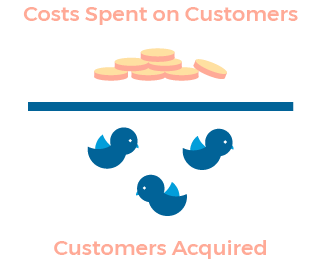
That’s the CAC calculation in its most rudimentary form. You can dive even deeper by calculating CACs for specific campaigns (cost per clicks, SEM/SEO campaigns, free trials, etc.). Just divide the costs incurred for that campaign, by the number of customers acquired due to the campaign.
If you want a more granular outlook, you might determine CAC per stage of your marketing/sales funnel. You’d calculate costs associated with each funnel stage and number of customers acquired in that corresponding stage.
When is this metric useful for SaaS PMs?
This metric revolves around marketing and sales costs, so why should a PM care? Well, alone CAC answers the question: are we spending too much to get customers? Tracking CAC lets a SaaS PM adjust, pivot, swerve, do whatever needs to be done to improve product strategy. By itself, CAC is a beneficial metric for a PM at any point along the Technology Adoption Lifecycle Model in terms of budgeting, planning or resource allocation.
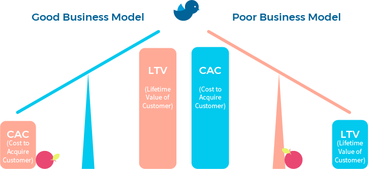
However, CAC’s real power is unlocked when combined with LTV because that’s when you can truly evaluate ROI. As seen in the diagram above, if CAC is greater than LTV umm… you have a genuine problem. If CAC’s lower than LTV, congrats! Your product strategy contributes to a solid business model.
Sure—by itself, this metric highlights spending habits. But without a comparison to LTV, it’s pretty meaningless. Combine the two and see how ROI is faring and use that comparison to offer transparency on whether or not your product strategy generates more than it costs.
Annual Contract Value
Working our way down from lifetime to yearly metrics, another valuable metric is annual contract value (or ACV). Essentially, it’s the average annual revenue you receive per customer contract.
Calculations
There seems to be a lot of confusion about how to calculate ACV. Should one-time fees be included? How do you handle multiple contract types? Is this the same as annual recurring revenue (ARR)? It’s a little all over the place.
We find the easiest way to calculate ACV is to remember it is an average. So even if you have multiple contract types, you’re finding the average monetary value of your customer contracts.
For instance, say Company X has one customer contract type of $1,200 for the year, paid in monthly increments of $100. Whether customers signed up for one year or five, the ACV is $1,200 until Company X changes that pricing. Say Company X introduces two new types of contracts: a yearly contract of $3,000 and another one for $1,500. For ACV, you take all three contract values for the year and average them. And that’s it. The formula boils down to this:
Your ACV also excludes one-time fees. If you’re interested in including them, then the metric you might be looking for is Total Contract Value (TCV): the sum of the different contract values for a year, plus any additional one-time fees. Revisiting Company X, if we want Company X’s TCV for the year, add the values ($1,200 + $3,000 + $1,500) plus any additional one-time fees associated with each contract.
When is this metric useful for SaaS PMs?
ACV is one of those metrics you can calculate any time as a SaaS PM. I mean, you probably aren’t putting out a product into the market without some sort of pricing, so it should be something you can calculate—whether your product is new to the market or is being adopted by Laggards.
ACV is similar to CAC in the sense that it’s not very useful by itself, but when combined with other metrics it becomes insightful data. If you haven’t crossed the chasm, use ACV to measure sales and revenue (ACV multiplied by number of customers = sales data).
As your product extends into the market, compare ACV against CAC. You can evaluate if your chosen price points will actually pay off costs of acquiring customers. Knowing how ACV compares to costs will impact SaaS PM’s decisions on resource allocation and product pricing.
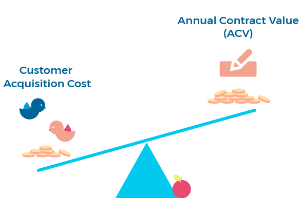
Monthly Recurring Revenue (or Annual Recurring Revenue)
A key differentiator between SaaS businesses and traditional software product orgs, is the fact that revenue doesn’t come in one-off purchases. Revenue comes in recurring increments on a monthly or annual basis. Monthly recurring revenue (MRR) or annual recurring revenue (ARR) are the metrics meant to track these recurring revenue streams.
Calculations
There’s a bunch of MRR calculations. The most common method though is summing all customer revenue for the month.
However, this equation can be tedious if you’ve got many, many customers. An alternative way of calculating is to use another common metric: average revenue per user/account (or ARPU/ARPA). If you have the ARPU/ARPA for the month you can multiply that value by total number of customers to generate an average MRR.
Many people would argue though that this doesn’t calculate true MRR. True MRR considers ALL monthly recurring revenue including any charges per user, upgrades, downgrades, lost MRR, etc. What you should definitely NOT include are one-time fees, because, well, that defeats the purpose of calculating a recurring metric. This formula below includes all recurring elements:
To clarify the equation, let’s define these various MRR metrics that are involved:
- New MRR: MRR gained from new customers
- Expansion MRR: Additional MRR gained from existing customers who upgrade
- Churned MRR: MRR that is lost due to churn or customer downgrades
Using the formula above will give you the ‘true’ MRR of your organization. If you’re looking for new MRR earned this month (i.e. Net New MRR), eliminate MRR at the beginning of the month and use the formula below:
Everything we’ve said about MRR, applies to ARR as well. They’re calculated exactly the same way just for different time periods. If you’re measuring in monthly increments and want to analyze annually, all you’d have to do is multiply MRR amounts by 12 to get ARR.
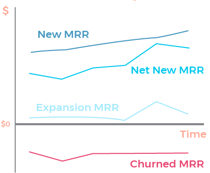
When is this metric useful for SaaS PMs?
Seeing as MRR and ARR are telling signs for whether or not your SaaS organization is generating revenue, these metrics should be on a SaaS PMs radar at all times. If there are any metrics a SaaS PM should be monitoring when entering the product market, they should be MRR and ARR. These metrics are glimpses into how your product is selling.
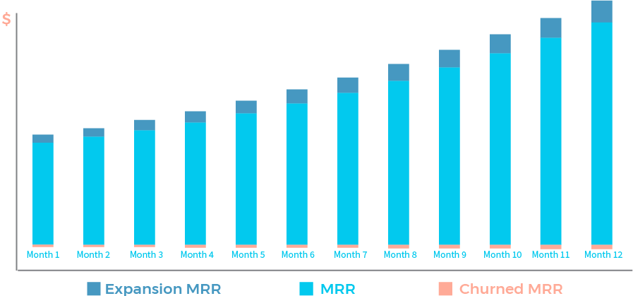
As you move along the Technology Adoption Lifecycle Model, MRR and ARR evolve into a SaaS organization’s primary indicators for growth. SaaS PMs can develop certain product features and experiences using MRR/ARR (specifically fighting churned MRR/ARR) as justification for these decisions.
Churn
Simply put, churn is customers you’ve lost in a specific period of time. Tracking this metric forces you as a PM to re-evaluate your product strategy (and possibly do a reset). If churn is high, something about your product is turning away users. Consider it a healthy dose of reality about what you as a PM are doing right or wrong.
Calculations
There are apparently 43 different ways to calculate churn rate for SaaS companies. That’s a lot. But at the root of all 43 ways, churn rate is lost customers divided by total number of customers. But that’s if you asked for a churn rate for your company’s entire lifespan. That’s not really valuable to anyone. Hone in on a specific period and look specifically at how customers churn during that particular time.
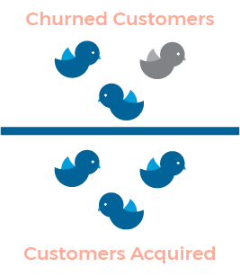
We should note that we’ve been talking about customer churn rate so far (a.k.a. logo churn rate). But we can also measure churn in the form of lost revenue too.
Enter gross revenue churn. This metric measures how much revenue is lost in a specific period of time due to customers opting out of your product or service. Offering the same outlook as your customer churn rate, gross revenue churn puts the metric into a financial perspective for anyone who loves dealing with dollah, dollah bills instead of customer numbers. You calculate it exactly the same way as your customer churn, except replace number of customers with revenue:
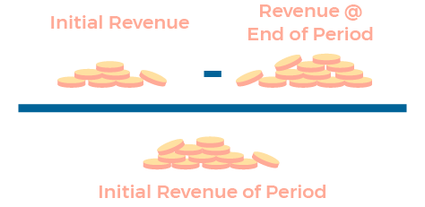
When is this metric useful for SaaS PMs?
No matter where your product falls in the Adoption Lifecycle, if customers are leaving, that’s something you need to monitor. Chances are churn will become a real issue once you’ve entered the Early Adopters phase. That’s when you’ve developed a solid audience and you’re trying to reach that majority audience by crossing the chasm. As PMs, if you’re seeing your customers churning before the chasm, your chances of making it across that chasm to the majority are slim to none.
Your early adopters are much more forgiving than your majority audiences because they’ve opted into a product they know is less developed and potentially buggy. So if you piss off your early adopters enough that they drop your product, you’ll experience greater pushback with your majority audiences. As a SaaS PM, make churn a primary concern once your early adopters start to ramp up and always keep an eye on the churn rate while moving further into the market.
Quick Ratio
Without using accounting jargon, quick ratio compares how many dollars are coming in versus how many dollars are going out. By compacting several metrics into a single ratio, quick ratio is a no-nonsense reflection of company growth and team performance—including the product team.
Calculations
In layman’s terms, quick ratio is revenue growth over revenue loss.
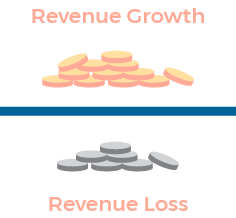
To be more PM-friendly, we can break that formula down further into MRR (monthly recurring revenue) metrics.
Calculate revenue growth by summing your new MRR and expansion MRR. On the flip side, revenue loss totals your churned MRR and contraction MRR (lost revenue due to downgrades in your time period). So the previous formula gets updated like so:
At the end you’ll have a single number to make a ton of conclusions from. Looking at the quick ratios of the SaaS industry, we’ve got some advice for what ratio you want:
- Quick Ratio > 4: Our CEO, Latif, sees this value as the gold star standard. He describes companies with a quick ratio of 4 as world-class companies because it means for every $4 of revenue, only $1 is lost (i.e. you’re growing substantially).
- 3 < Quick Ratio < 4: This is the range most companies fall within. It’s common to be within this range, especially if you’re before the chasm. It demonstrates good growth, but also indicates room for improvement (your costs might be too high!).
- Quick Ratio < 2: You’re probably struggling. Anything lower and you’ve got a major issue. Falling in this range suggests that churn is heavy and it’s time to rethink your product strategy.
A quick ratio isn’t called quick for nothing. With one glance you get a much-needed reality check on the performance of your product (and company).
When is this metric useful for SaaS PMs?
Quick ratio can be calculated at any stage along the Technology Adoption Lifecycle Model. If SaaS PMs are most concerned with growth and high-level statistics at your product’s earlier stages, it makes sense to throw quick ratio into the mix early on because it’s a high-level overview of your product based on growth metrics. But as discussed earlier, churn is usually not a huge concern until the Early Adopters phase. So while quick ratio can be calculated earlier, it might not be as relevant until churn becomes a larger concern.
Retention
Since we talked about lost customers, we need to talk about loyal customers. Retention rate—how many existing customers stay as customers—is an indicator of product management success and a presence of solid services that keep customers around. Comparing retention rate to churn rate can offer a fresh perspective on how many customers are sticking around vs. saying their goodbyes.
Calculations
Think of retention rate as the antithesis of churn rate. With churn rate you calculate the rate of lost customers, whereas with retention, you calculate the opposite: how many customers stayed. If you measure the percentage of lost customers for churn, you’re measuring the percentage of kept customers for retention. Ultimately, the formulae end up being very similar.
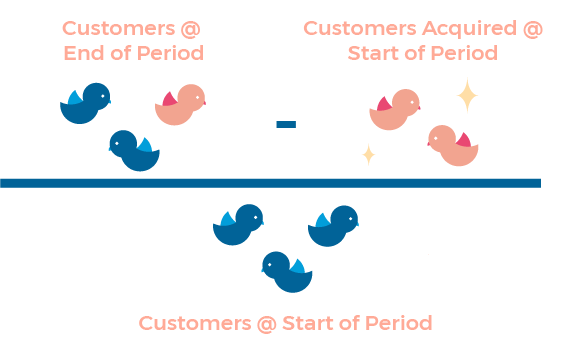
Think of retention rate as a success barometer for product initiatives or strategies that have been put in place. Once you know what’s working and not, you can move forward with a stronger idea of what features are sticking.
When is this metric useful for SaaS PMs?
Since we’re dealing with the “opposite” of the churn rate here, it makes sense to start measuring your retention rate around the same time. As mentioned in our discussion of churn rate, measuring metrics related to your customers don’t become super relevant until you’ve entered the Early Adopters phase.
It’s when you’re crossing the chasm, knowing how your customers are reacting to your product becomes really important. Retention rate, however, becomes a major KPI as you enter your majority audiences. It’s in these phases when the audience is the least forgiving. If you’ve crossed over the chasm and you’re finding receptive audiences choosing to stay with your product, you might just have a winning product strategy on your hands.
Conversion Rate
Since we’re talking about metrics that measure success, let’s talk conversion rates. It’s the rate at which you turn a “maybe” or a straight-up “no” into a “yes.” Conversions occur throughout the marketing/sales funnel (as we see in the diagram below). For SaaS PMs’ sakes, let’s chat visitor to customer (free trial or paid) conversion rates.
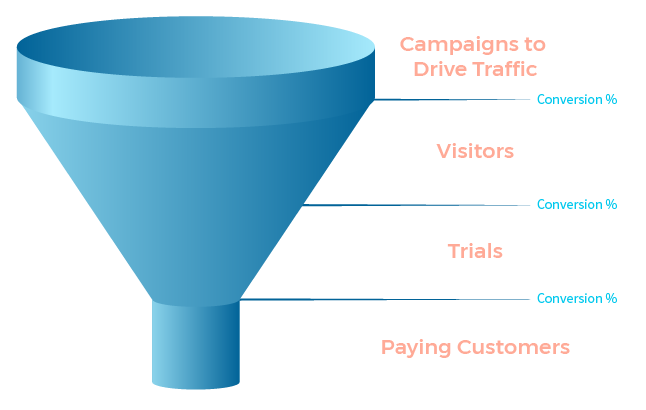Just like retention, conversion rates are temperature checks of how successful your product strategy is and how well your product strategy aligns with product marketing and demand generation. A high conversion rate is a green light to your current product strategy, but also a benchmark for future improvements. Low conversion rates uncover flaws and a need for rejigging of your strategy.
Calculations
For whatever your desired action (in a SaaS PM’s case, a conversion from visitor to customer), you take number of customers that completed that action and divide by number of “visitors” to that action and voila—you’ve got yourself a conversion rate. (Always remember to make sure you’re choosing a consistent time range for your calculation.)
Conversion rates are also relative. Yes, there may be industry standards for what a good conversion rate is. But as a PM you have a say in what’s considered successful. Think of conversion rate as a way of quantifying the efforts your team has put into capturing customers.
When is this metric useful for SaaS PMs?
Sales and growth rates are the most important metrics for SaaS PMs with products just entering the market. And conversion rates perfectly fit into that data mould. Conversion rate is the type of high-level growth data that PMs with a new product in market are most interested in (i.e. products in the Innovators and Early Adopters phases). Focus on conversions from the start of your product’s journey and beyond to consistently study whether your product (and product marketing) is hitting the mark with your audiences.
Lead Velocity Rate
Now, measuring MRR/ARR is great for monitoring growth and all, but the issue is that those metrics are lagging indicators. Any revenue metric you’re measuring for SaaS is based on past data—not real-time data. That’s where lead velocity rate (LVR) steps in. LVR is your organization’s growth in terms of qualified leads.
While MRR/ARR tell you how you’ve grown, they’re pretty crappy at forecasting the future; lead velocity is real-time, so it’s a reliable predictor for future revenue and growth. The key though: measure only qualified leads.
Calculations
To calculate lead velocity, you enlist your basic growth formula, with qualified leads as your input.
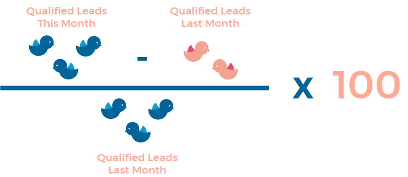
From this formula you’ll get a percentage of your qualified lead growth month over month (or whatever time period you’re measuring). This number is a snapshot of whether your leads are growing or declining, allowing SaaS PMs to plan accordingly to capture (or maintain) leads.
When is this metric useful for SaaS PMs?
LVR is extremely relevant in the Innovators or Early Adopters phases. Since it’s a real-time indicator of growth, PMs can confidently guesstimate revenue for future stages (and adjust their product strategy based on this forecasting).
Besides being able to predict future revenue more accurately, a SaaS PM can take immediate action regarding product strategy and/or product marketing if they see significant changes in LVR. Because the metric is real-time, a shift could signal that features being released aren’t sticky enough or that product marketing campaigns aren’t all that they’re cracked-up-to-be. Either way, a PM can adjust their strategy immediately by being on top of this metric.
If you’re finding metrics impacting your product strategy (and you should), a roadmap might be the perfect tool to keep track of shifting priorities. Check out our template library to start building your own roadmap.